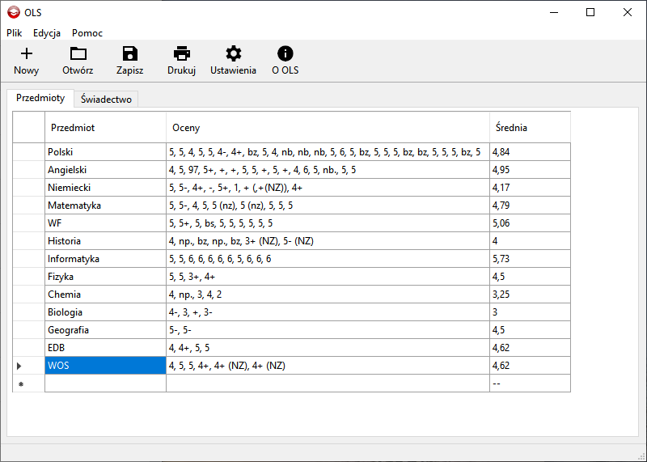
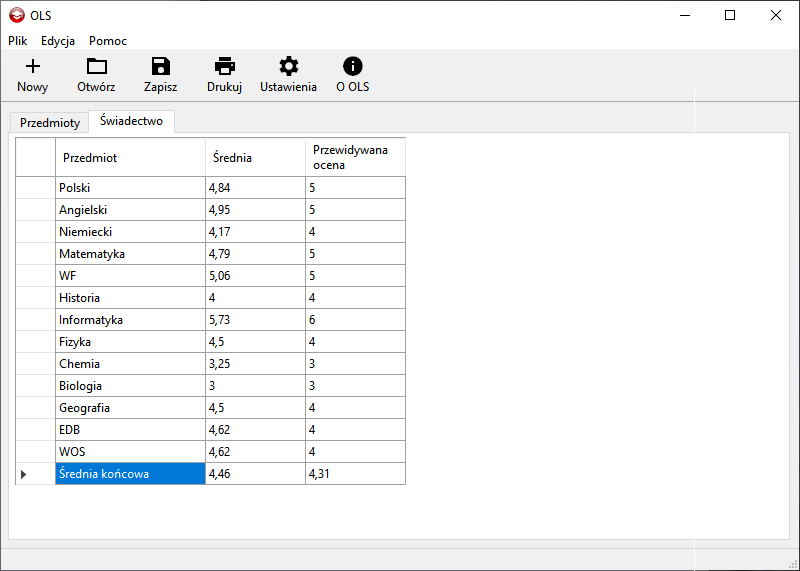

OLS Windows C# PL
OLS pozwala na szybkie obliczenie średniej ocen końcowych oraz średnich przedmiotów.
Pobierz
Kliknij w ten link aby pobrać wersję 20.12 aplikacji OLS


OLS pozwala na szybkie obliczenie średniej ocen końcowych oraz średnich przedmiotów.
Kliknij w ten link aby pobrać wersję 20.12 aplikacji OLS